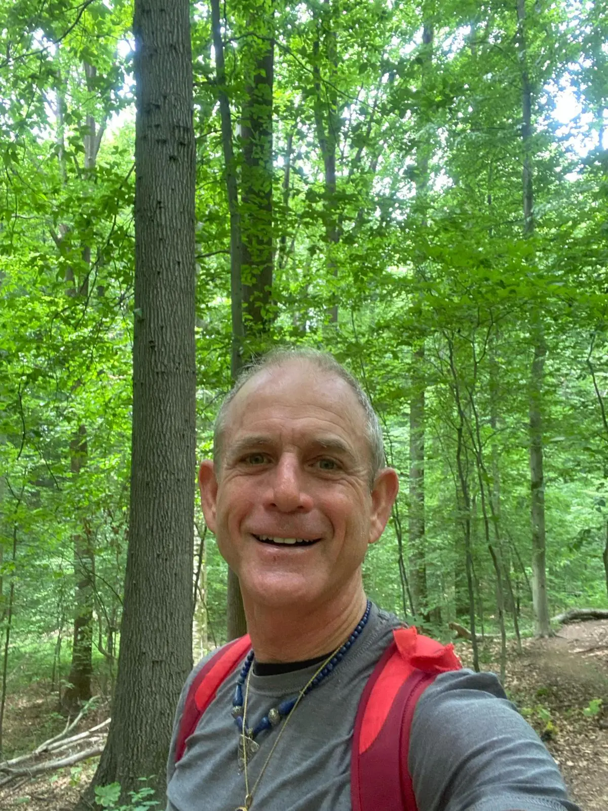

A virtuoso of healing whose journey has transformed countless lives.
David Landcaster is more than just a massage therapist. He is a virtuoso of healing, a bodywork specialist whose journey started in 2013 and has since been illuminated by insights from countless eminent healers and life-changing experiences. David's unique path in life has transformed him into a beacon of recovery, a testament to the potential of human resilience. From the ashes of life's most formidable trials, he has emerged stronger and wiser, ready to extend the same transformative experiences to you through Atum Therapy.
Atum Therapy is not simply a procedure; it's a carefully crafted tapestry of multiple healing modalities, woven together through the hands of a master. It's the fruit of two decades of David's steadfast dedication to alleviating human suffering and addressing the deep-rooted causes behind physical, physiological, mental, and emotional distress.

Atum Therapy is about the harmonious rebalance of your mental, emotional, and spiritual fields. Each comprehensive session, spanning 90–180 minutes, utilizes a suite of transformational tools:
The experience of Atum Therapy is profound. It offers unparalleled pain relief, a tranquil mind, a soothed emotional state, and the balance your body craves. But the real magic unfolds on the therapy table when you, as the recipient, surrender to the process, place your trust in David's practiced hands, and open your mind to the possibility of profound transformation. Your healing journey is only limited by your belief in your ability to heal.
Atum Therapy follows the meridian systems used in traditional Chinese medicine. Using state-of-the-art tools such as the Body Buffer, Infra-red Mat, Vibration, and Frequency instruments, even the most stubborn blockages can be released, restoring you to a state of serene homeostasis. David's own life-changing encounter with an acupuncturist two decades ago — a session that healed a year-long struggle with carpal tunnel pain — led him to incorporate this powerful ancient technique into Atum Therapy.

Hear directly from those whose lives have been transformed through the Atum Therapy experience.
★★★★★"Best massage of my Life." I have traveled the World receiving bodywork from 7 countries to date. I have received over 200 sessions ranging from Shirodhara, to Acupressure, Energetic Balancing, sports massage and the list goes on. My life and health has improved exponentially as a direct result of working with David. His Mastery and ability to weave numerous styles of bodywork techniques together, in absolute confidence, mastery, intuitiveness is extra-ordinary. He understands exactly what my body needs are, without saying a word, and somehow responds with healing actions — nothing short of uncanny bordering on psychic. Thank you David.
— Dan Schneider
A curated network of world-class healing practitioners, hand-selected by David to support every dimension of your wellness journey.
At Atum, we understand that the healing journey requires a multifaceted approach, often going beyond the expertise of a single practitioner. As an integral part of Atum therapies, we have developed a sophisticated Referral Database — a network encompassing a vast spectrum of practitioners, each renowned in their field, ready to provide comprehensive support for your mental, emotional, physical, and spiritual well-being.
By linking you to these experts, the Atum Client Referral Database amplifies your healing journey, enabling a comprehensive, holistic approach to wellness.
With Atum Therapy, you're not just another client. You're a cherished participant in a healing journey, one that will leave you touched, transformed, and attuned to the harmonious rhythm of wellness. Let David Landcaster, your guide on this journey, share the joy of his work with you as you step into a world where pain is transient, and peace is the horizon.
Welcome to the Atum Therapy experience.